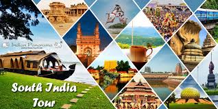

Western Ghats Region
South India is the area encompassing the Indian states of Andhra Pradesh, Karnataka, Kerala, Tamil Nadu and Telangana as well as the union territories of Andaman and Nicobar, Lakshadweep and Puducherry, occupying 19.31% of India's area (635,780 km2 or 245,480 sq mi). Covering the southern part of the peninsular Deccan Plateau, South India is bounded by the Bay of Bengal in the east, the Arabian Sea in the west and the Indian Ocean in the south. The geography of the region is diverse with two mountain ranges - the Western and Eastern Ghats, bordering the plateau heartland. Godavari, Krishna, Kaveri, Tungabhadra and Vaigai rivers are important non-perennial sources of water. Bangalore, Chennai, Hyderabad, Coimbatore, Kochi, Visakhapatnam, Thiruvananthapuram , Mysore, Vijayawada, Madurai, Mangalore, Tiruchirappalli, Warangal are some of the major cities.
There is a wide diversity of plants and animals in South India, resulting from its varied climates and geography. Deciduous forests are found along the Western Ghats while tropical dry forests and scrub lands are common in the interior Deccan plateau. The southern Western Ghats have rainforests located at high altitudes called the South Western Ghats montane rain forests and the Malabar Coast moist forests are found on the coastal plains.[46] The Western Ghats is one of the eight hottest biodiversity hotspots in the world and a UNESCO World Heritage Site.